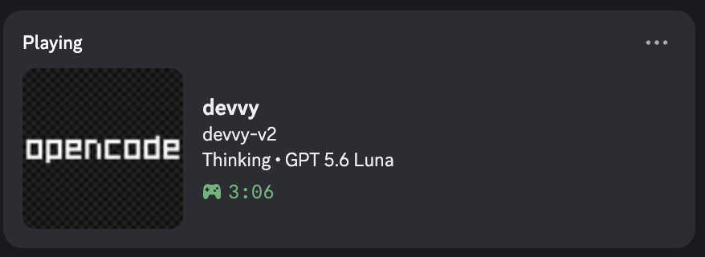

Devvy
Three coding tools, one Discord status. Devvy is a local daemon that owns the Discord connection, decides which tool to show, and shows only high-level state: never prompts, code, or paths.
Test scripts, all run in CI, including real-daemon integration tests.
Releases publish only after CI passes on the tagged commit.
Discord IPC framing written on Node built-ins.
What it shows

The problem
I use VS Code, OpenCode, and Command Code at the same time. When each tool talks to Discord on its own, they overwrite each other and the status flips back and forth. Most presence plugins also show too much: file names, paths, or the task text.
What I built
VS Code extension ──┐
OpenCode plugin ────┼──▶ Devvy daemon (127.0.0.1:17377) ──▶ Discord IPC ──▶ Discord
Command Code mod ───┘ arbitration · TTL · privacy filter- One owner: integrations send small structured updates to a loopback HTTP endpoint. Only the daemon talks to Discord.
-
Discord IPC from scratch: built on
node:netandnode:buffer. Each frame has an 8-byte header (opcode and length, little-endian) and a JSON body. The client handles handshake, frames, close, and ping/pong, buffers partial frames, and reconnects with backoff from 1 s to 30 s. - No runtime npm dependencies. The installer downloads a release payload, verifies its SHA-256 checksum, and starts the daemon at login.
The hard part: arbitration without flip-flop
The daemon picks one source. Tool kind comes first (OpenCode, then Command Code, then VS Code). Inside one kind, an active source beats an inactive one, a focused window beats an unfocused one, and the most recent focus breaks a tie.
The subtle bug was heartbeats. Each source sends one every few seconds. If heartbeat time counted as “recent activity”, two open windows would take turns winning. So a heartbeat only keeps a source alive (a 15-second TTL, swept every 2 seconds). It is excluded from the arbitration key and never triggers a Discord update. Outgoing updates are also limited to one every 2 seconds.
Key decision: a hard privacy boundary
| Devvy shows | Devvy never shows |
|---|---|
| Project folder name (basename only) | Full paths, home directory names |
| High-level state: Thinking, Editing, Planning, Waiting | Prompts, AI responses, commands, task text |
| Model name, only when reliably known | Source code, file contents, credentials |
The filter sits in the daemon, so a new integration cannot leak more than the daemon allows.
Evidence
- 26 test scripts, all run in CI: 22 daemon tests (unit tests, and integration tests that start the real daemon against a mock Discord IPC server), 1 Windows helper test, 1 VS Code CLI discovery test, and 2 release-payload checks.
- CI also builds and checks the VS Code extension and the release payloads.
- Release gate: GitHub Actions publishes a release only after CI passes on the tagged commit.
- A second daemon on the same port exits cleanly instead of fighting the first one.
Limitations
-
Released for macOS only (v4.0.x). Windows support is on
mainbut ships with the next release, v4.1.0. - It supports three tools. The model name appears only when the integration can identify it reliably.
- The Discord desktop app must be running.
The README has install steps, the privacy rules, and the release process.
Read the Devvy README